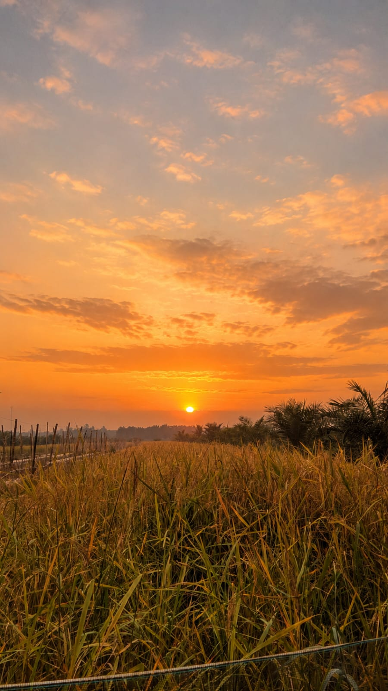
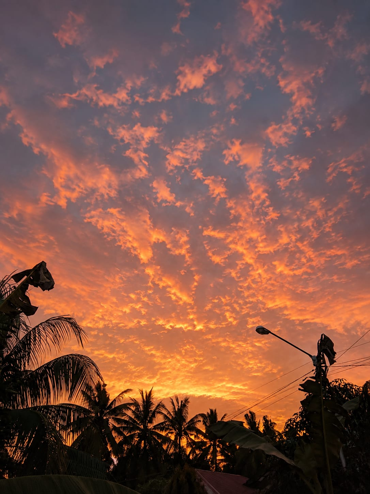
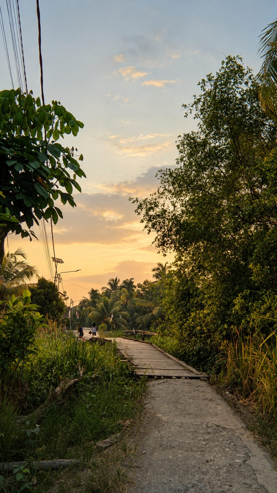

GALERI DESA SEPADU
Pesona Desa Sepadu
Desa bukan hanya tempat tinggal, tetapi juga tempat tumbuhnya kehidupan, kebersamaan, dan keindahan alam. Berikut beberapa suasana Desa Sepadu yang dapat kita nikmati.
01

02

03

04

05

06